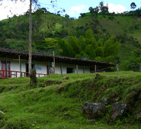

Delimitación de la región que conforma Paisaje Cultural Cafetero
Los dieciséis atributos que se presentan a continuación, expresan los valores tangibles, excepcionales y universales del Paisaje Cultural Cafetero. Los que están señalados con asterisco (*) son las variables que hicieron parte de la valoración y que sirvieron para definir el modelo de delimitación, es decir la identificación del área principal y del área de amortiguamiento de este paisaje.



| Tabla 1. Atributos del Paisaje Cultural Cafetero | |
| 1. Café de montaña* | 9. Patrimonio arqueológico |
| 2. Institucionalidad cafetera y redes afines* | 10. Poblamiento concentrado y estructura de la propiedad fragmentada |
| 3. Predominancia de café* | 11. Influencia de la modernización |
| 4. Cultivo en ladera* | 12. Patrimonio urbanístico |
| 5. Edad de la caficultura* | 13. Tradición histórica en la producción de café |
| 6. Patrimonio natural* | 14. Minifundio cafetero como sistema de propiedad de la tierra |
| 7. Disponibilidad hídrica* | 15. Cultivos múltiples |
| 8. Patrimonio arquitectónico | 16. Tecnologías y formas de producción sostenibles en la cadena productiva del café |